모니터링
모니터링은 운영자가 안정적인 시스템 운영을 할 수 있도록 시스템 리소스와 애플리케이션 퍼포먼스 및 로그 (이벤트 로그, 감사 로그, 알림 로그) 에 대한 정보를 제공한다.
|
시스템, 이벤트 로그, 감사 로그, 알림 로그 메뉴의 경우 클러스터 스코프의 모니터링 메뉴에도 동일한 메뉴가 있다. 둘은 스코프의 기준이 클러스터와 네임스페이스라는 것을 제외하고 동일하기 때문에 해당 가이드를 참고한다.
|
애플리케이션
개요
애플리케이션 개요에서는 수집한 메트릭을 중심으로 애플리케이션의 성능 모니터링 정보를 제공한다. 주요 모니터링 항목은 다음과 같다.
| 항목 | 메트릭 |
|---|---|
서비스 |
전체 액티브 서비스, 액티브 서비스, TPS, 오늘의 TPS, 방문자, 응답시간, XLog |
시스템 |
CPU, 메모리 |
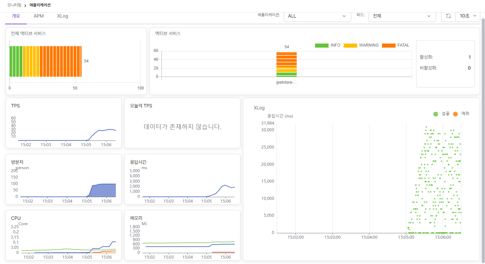
각 모니터링 항목에 대한 설명은 다음과 같다.
- 액티브 서비스
-
개별 인스턴스 별로 현재 처리중인 리퀘스트에 대한 정보를 바 차트로 제공한다. 처리중인 리퀘스트는 단계별로 만족(Info), 허용(Warning), 불만(Fatal) 으로 구분하고 각각을 녹색, 노란색(3초), 주황색(8초)으로 표시한다.
-
전체 액티브 서비스는 현재 처리중인 전체 인스턴스의 상태 정보를 제공한다.
-
액티브 서비스는 현재 처리중인 개별 인스턴스 상태 정보를 제공한다.
-
처리중인 리퀘스트들이 표시될 때, 해당 차트 선택하면 액티브 서비스 정보 모달이 나타나고 진행중인 리퀘스트에 대한 정보를 얻을 수 있다.
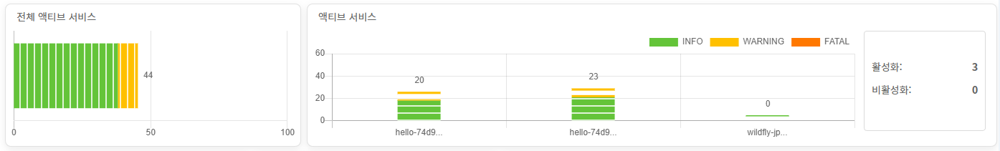
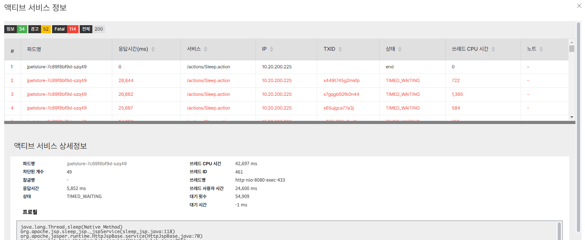 |
- TPS, 오늘의 TPS
-
TPS는 초당 처리량을 의미하고 오늘의 TPS는 당일 시간대별 TPS 의 평균을 의미한다.
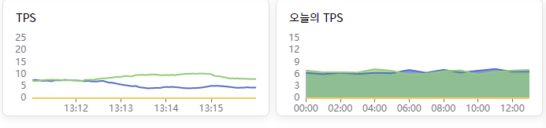
- 방문자, 응답시간
-
방문자는 5분간 방문한 유니크한 방문자 수를, 응답시간은 애플리케이션 응답시간을 의미한다.
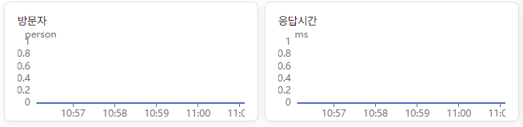
- CPU, 메모리
-
CPU 와 메모리 사용량을 제공한다.
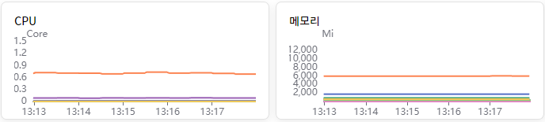
- XLog
-
시간별 응답시간 정보를 scatter 산점도 차트로 표현한다. 차트에서 X 축은 요청이 발생한 시간을 Y 축은 응답시간을 의미한다. 해당 요청에 대한 HTTP 응답 코드에 따라 차트에 표시되는 색이 녹색 또는 주황색으로 표시되며 주황색은 오류 발생(HTTP 5xx 코드)을 의미한다.
차트의 일부 영역을 마우스로 블록 지정하면 XLog Info 에서 해당 영역에서 처리된 요청들에 대한 상세 프로파일을 분석할 수 있다.
|
콘솔에서 표시되는 XLog 최대 응답 크기의 기본값은 20MB 이다. |
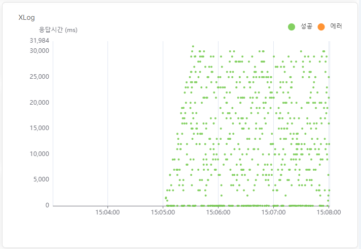
XLog Info 에서는 XLog 산점도 차트에서 선택한 영역을 기준으로 실행된 요청에 대한 정보를 나열한다. 특정 요청을 선택하면 해당 요청에 대한 시작시간, 수행시간, CPU 소요 시간 등의 정보를 확인할 수 있다.
|
XLog 드래그 최대 개수는 기본 2000개로 설정되어 있으며, 이를 초과하면 드래그 범위를 줄이거나 설정을 변경해야 한다. 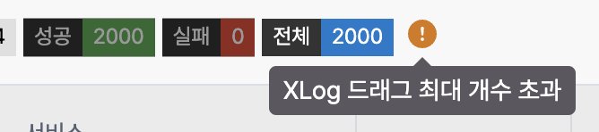 |
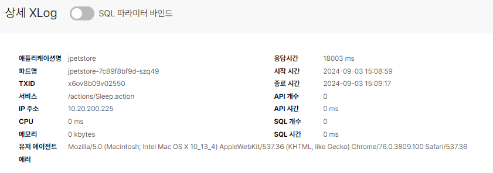
각 항목에 대한 내용은 다음과 같다.
| 항목 | 설명 |
|---|---|
애플리케이션명 |
애플리케이션 이름 |
파드명 |
파드 이름 |
Txid |
트랜잭션 ID |
서비스 |
서비스 URL |
IP 주소 |
요청이 발생한 IP |
Cpu |
서비스 CpuTime |
메모리 |
서비스에서 사용한 memory |
응답시간 |
서비스 소요시간 |
시작 시간 |
서비스 시작시간 |
종료 시간 |
서비스 종료시간 |
API 개수 |
서비스에서 API 수행 횟수 |
API 시간 |
서비스에서 사용된 API 시간의 합 |
SQL 개수 |
서비스에서 SQL 수행 횟수 |
SQL 시간 |
서비스에서 사용된 SQL 시간의 합 |
프로파일에서는 해당 메소드의 실행에 소요된 시간을 표시한다. 메소드들의 실행 관계는 트리 형태로 표현하며 이전 단계와 시간 차이를 T-GAP 으로 표시한다.
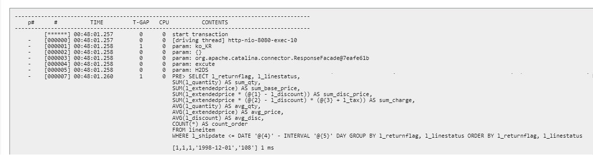
XLog 에서는 응답시간에 따라 일정 확률로 로그를 남긴다.
| 응답시간 | 확률 |
|---|---|
0~1초 사이 |
3% |
1~2초 사이 |
5% |
2~3초 사이 |
20% |
3초 이상 |
100% |
XLog에서 Bind SQL Parameter
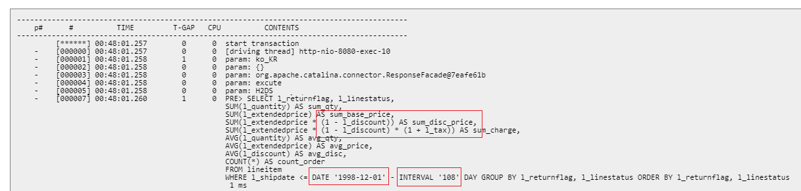
APM
APM 탭에서는 수집한 메트릭을 개요보다 더 상세하게 기간별로 제공한다. 주요 모니터링 항목은 다음과 같다.
| 항목 | 메트릭 |
|---|---|
서비스 |
응답 시간, GC 시간, 오류 비율, 사용된 Heap, 사용된 Perm, 서비스 카운트, TPS, 액티브 서비스 |
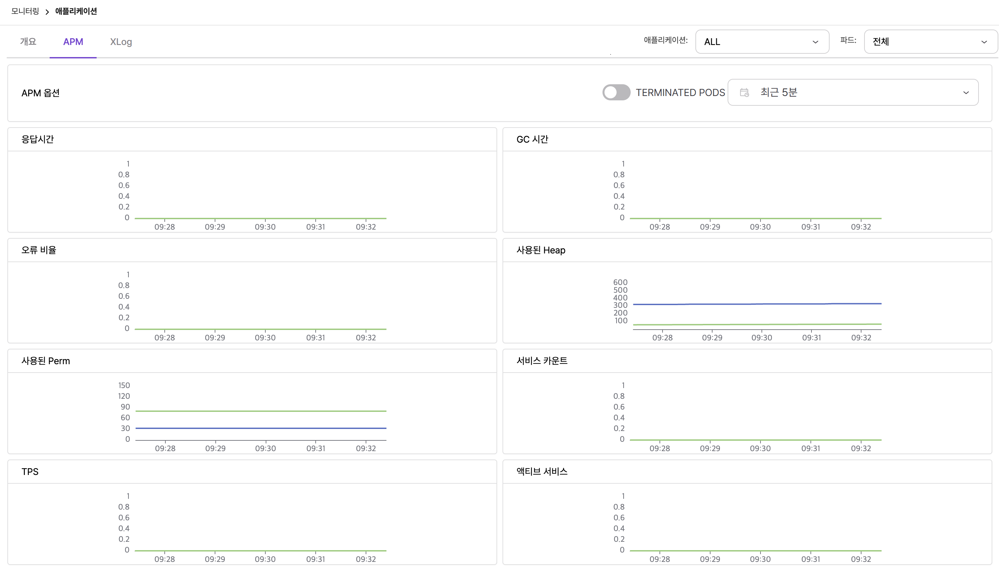
개요에서 설명을 한 항목을 제외하고 추가된 항목에 대한 설명은 다음과 같다.
- GC 시간
-
GC 시간은 Garbage Collection 시간을 의미하며, GC 시간이 길어지면 서비스 응답 시간이 느려질 수 있다.
- 오류 비율
-
오류 비율은 서비스에서 발생한 오류 비율을 의미한다.
- 사용된 Heap, 사용된 Perm
-
사용된 Heap 은 Heap Memory 사용량을, 사용된 Perm 은 Perm Memory 사용량을 의미한다.
- 서비스 카운트
-
서비스 카운트는 서비스 호출 횟수를 의미한다.